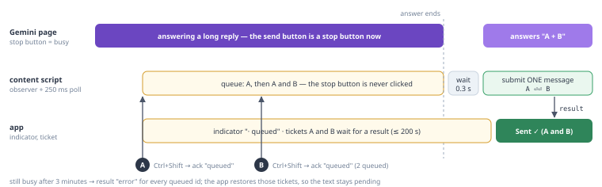

وسط یک جلسه، طبیعی است که کاربر دوباره Ctrl+Shift را بزند در حالی که Gemini هنوز جواب قبلی را مینویسد. در
این حالت دکمهی ارسال به دکمهی توقف تبدیل شده؛ کلیک روی آن جواب در حال نوشتن را قطع میکند. پس افزونه
نباید فوراً ارسال کند، ولی متن هم نباید گم شود.

queued میشنود و
منتظر پیام result میماند؛ ticket تا آن موقع نه قطعی است نه بازگشته.
ناظر DOM (MutationObserver) به محض اینکه دکمهی توقف ناپدید شود خبر میدهد و در تب پنهان هم کند نمیشود
(فصل ۱۴). poll هر ۲۵۰ میلیثانیه فقط یک تور ایمنی است، برای وقتی که تغییری بدون رویداد DOM اتفاق بیفتد. بعد از تمام شدن
جواب، ۳۰۰ میلیثانیه صبر میشود و دوباره بررسی میشود، چون صفحه گاهی لحظهای بین دو حالت چشمک میزند.
اگر جواب بعد از ۳ دقیقه هنوز تمام نشده باشد، صف رها میشود و برای هر شناسه result با خطا فرستاده میشود. اپ هم
مستقلاً بعد از ۲۰۰ ثانیه بدون نتیجه، ticket را برمیگرداند.
اگر چت درست در لحظهی ارسال مشغول شود، تحویل busy برمیگرداند و متن به جای خطا به صف میرود؛ در flush هم همینطور.
[SENT …] (queued) دارد.While the chat is still answering, the send button becomes a stop button, so delivering immediately would abort the answer. The content script queues the text and acks "queued"; it watches the page with a MutationObserver plus a slow poll, and when the answer ends it merges all queued texts into one message and submits it, then reports a result for every id. The app keeps those tickets open until the result arrives, so nothing is lost even if the queue is given up after three minutes.